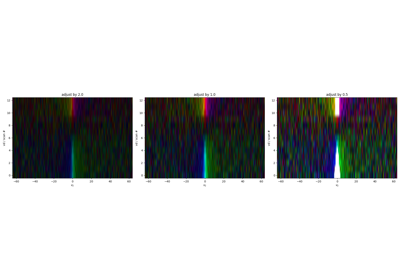
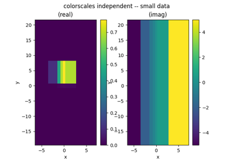
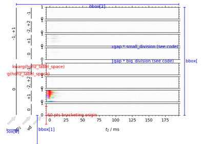
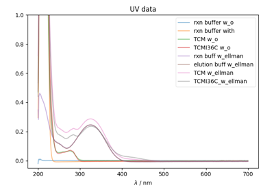
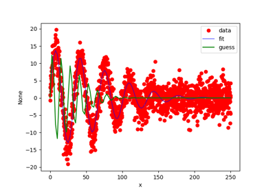
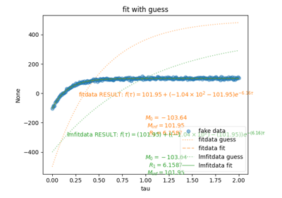

PySpecData Examples¶
Below is a gallery of examples using our various functions.

PPM in 2D
Error and units example
Calculation of the Covariance Matrix
Calculation of the Covariance Matrix


Plotting Routines
Calculation of the Covariance Matrix
Calculation of the Covariance Matrix



Unevenly spaced data
DCCT¶
We now have nicely packaged code to generate Domain Colored Coherence Transfer images.
Arranging Multiple DCCT Plots

Using the DCCT function
ESR¶
Examples involving Bruker Electron Spin (Paramagnetic) Resonance Data.


Regularization¶
1, 1.5, and 2D regularization


UV¶
Reading Cary UV-Vis data and performing manipulations.


Manipulation of UV-Vis data

Fitting¶
Classes that we have developed to make curve-fitting nicer.

Fit Using Bounds

Fit complex data with transform
Fit complex data with transform

Fitting Data (Nonlinear + Symbolic)
Fitting Data (Nonlinear + Symbolic)
XX Individual Functions XX¶
These are not very important – just tests to verify the performance of individual functions.


sphx_glr_auto_examples_indiv_funcs_test_colormatch.py
show an easy method for matching colors using pyspecdata